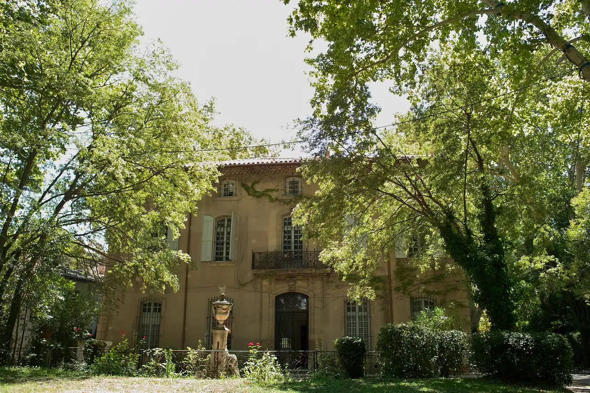

.jpg){kind=link}
관광·미술관
Nous avons déjà des billets.
이미 표가 있습니다.
누 자봉 데자 데 비예

1859년 세잔의 아버지가 매입하여 1899년 매각할 때까지 40년간 세잔 가문의 소유였던 18세기 프로방스식 영지 저택(Bastide)이다.
세잔이 법학을 포기하고 화가의 길로 들어선 20대 청년기부터 원숙한 60세에 이르기까지 생애 가장 오랜 기간 머물렀던 곳으로, 화가의 초기와 중기 예술 세계를 이해하는 열쇠다.
1860년대 세잔은 저택 1층 대살롱(Grand Salon) 벽면에 사계절을 상징하는 거대한 벽화 연작과 아버지의 초상을 그렸으며, 저택 앞 연못과 밤나무 가로수길, 그리고 정원 너머로 보이는 생트 빅투아르 산을 1870년 처음으로 캔버스에 담았다.
"로브 아틀리에가 세잔의 '마지막 완성'이라면, 자스 드 부팡은 세잔의 '출발과 40년의 모색'이다." 2026년 대대적인 복원 공사를 통해 새롭게 개방된 저택 내부와 세잔의 붓터치가 시작된 마로니에 정원을 걸으며, 한 고독한 예술가가 어떻게 근대 회화의 아버지로 성장했는지를 추적하기에 이상적인 심화 명소다.
| 운영시간 | 7/4~9/30 매일 09:00–18:00 · 10/1~10/31 매일 10:00–17:00 |
|---|---|
| 휴무 | 2026 시즌(7/4~10/31) 중 주간 정기 휴관일 없음 — 매일 개방 |
| 예약 | 정원 제한·사전 예약 강력 권장(성수기 사실상 필수). 정원(공원)만 볼 경우 현장 접수 |
| 항목 | 상세 정보 |
|---|---|
| 주소 | 17 Route de Galice, 13090 Aix-en-Provence |
| 운영/투어 | 가이드 투어로만 내부 관람 가능 (cezanne-en-provence.com 사전 예약 권장) |
| 입장료 | 일반 €9.50~€12.00 (아틀리에 세잔 통합권 할인 가능) |
| 접근 방법 | 엑상 구시가지 중심(로통드)에서 서쪽으로 약 2km (도보 25분, 또는 버스 Ligne 8 'Jas de Bouffan' 정류장 하차) / 전용 주차장 완비 |
| 선택 가이드 | 일정에 여유가 있고 세잔의 생애 전체를 깊이 탐구하고자 할 때 우선 추천 |
🏛 관람 순서 제안:
Jas de Bouffan(출발과 모색) →Musée Granet(회화 감상) →Atelier des Lauves&Terrain des Peintres(최후의 완성)의 3단계 순서가 세잔 예술의 완벽한 시간축을 형성합니다.
2026년 복원 프로젝트를 통해 2층 주거 공간 5개 실과 1층 살롱 2개 실이 새롭게 일반에 공개되었다. 세잔 당대의 벽지 패턴과 석고 장식 메달리온이 정밀 복원되어 19세기 프로방스 부르주아 저택의 생활상을 생생하게 체감할 수 있다.
Nous avons déjà des billets.
이미 표가 있습니다.
누 자봉 데자 데 비예
On peut prendre des photos ?
사진 찍어도 되나요?
옹 푀 프랑드르 데 포토
Où commence la visite ?
관람은 어디서 시작하나요?
우 코망스 라 비지트

폴 세잔이 생의 마지막 4년(1902–1906) 동안 매일 그림을 그렸던 언덕 위 아틀리에. 북향 채광창, 대형 캔버스용 벽 슬릿, 정물화에 등장했던 올리브 단지와 해골이 그대로 보존된 근대 미술의 성지.

마르세유와 카시스 사이에 걸쳐 20km에 걸쳐 펼쳐진 유럽 유일의 지중해 연안 국립공원. 에메랄드빛 바다로 수직 낙하하는 백색 석회암 피오르 협만들의 장관.

엑상프로방스 건축물의 황금빛 사암을 공급하던 고대·중세 채석장. 직각으로 깎인 붉은 사암 절벽과 소나무 숲 사이에서 세잔이 큐비즘의 기하학적 구도를 태동시켰던 야외 작업장.

유럽 최고 높이의 해안 절벽 캅 카나유(Cap Canaille) 아래 자리한 아늑한 지중해 어항. 파스텔톤 가옥, 칼랑크 국립공원 유람선 출발지, 유서 깊은 카시스 화이트 와인(AOC Cassis)의 고향.

1651년 옛 성벽 자리에 조성된 440m의 플라타너스 가로수길. 북쪽의 활기찬 카페와 남쪽의 고요한 17세기 귀족 저택, 4개의 유서 깊은 분수가 관통하는 엑상프로방스의 심장.

16세기 가죽 향장갑에서 출발해 500년 전통을 이어온 세계 향수 산업의 수도. 프라고나르(Fragonard) 유서 깊은 공장과 국제 향수 박물관이 자리한 프로방스 내륙 언덕 도시.